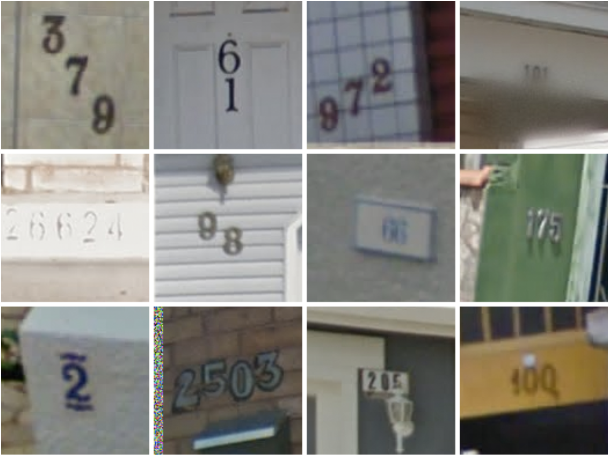
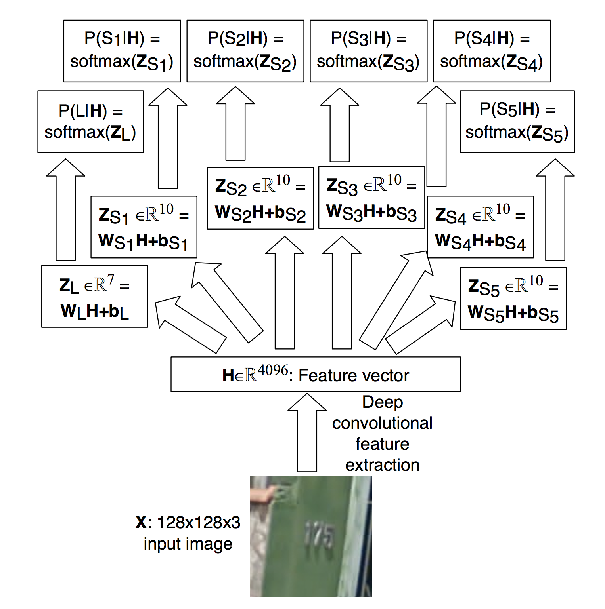
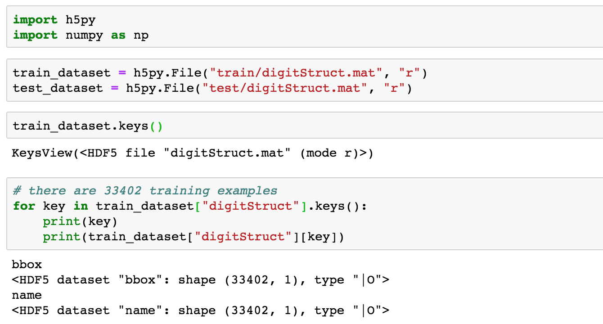
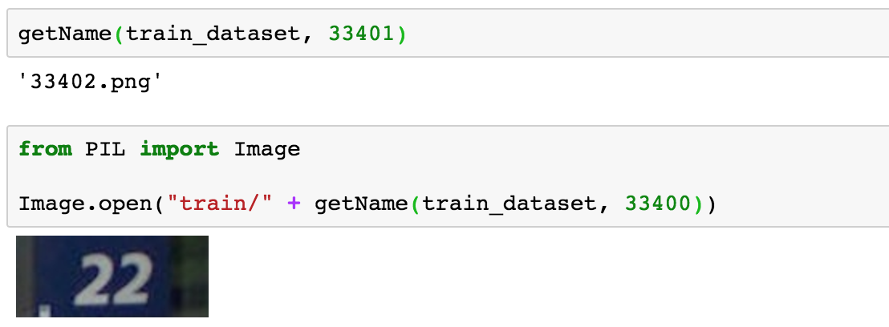
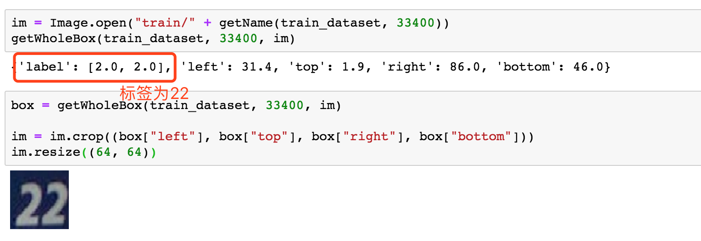
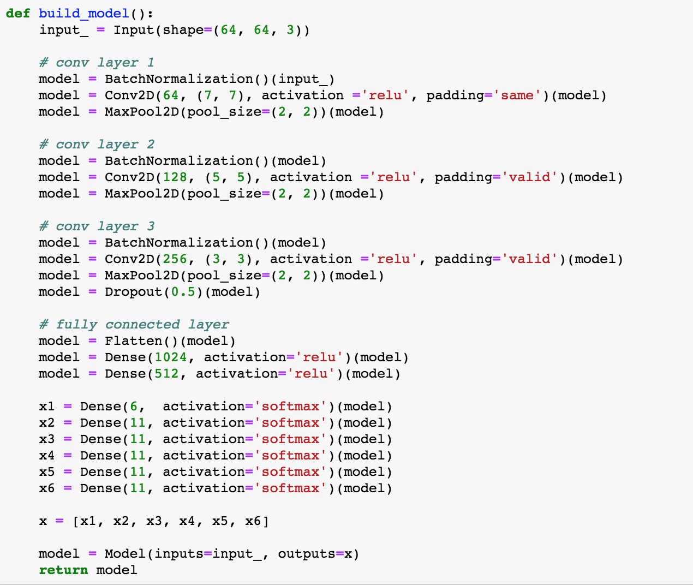
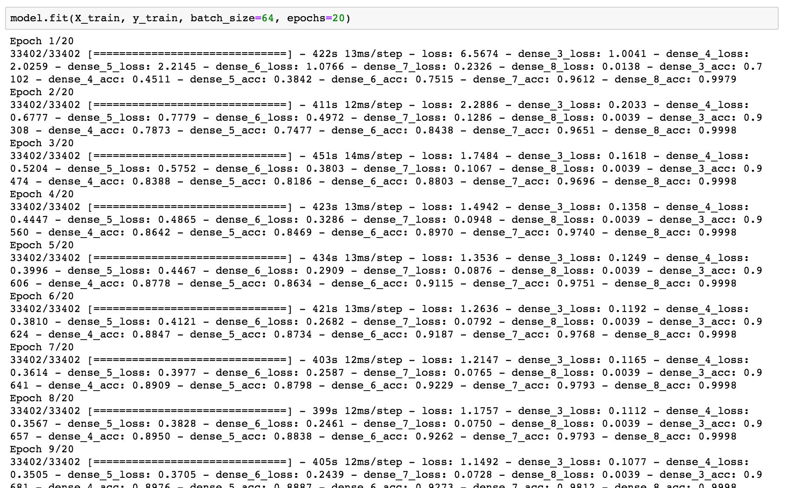
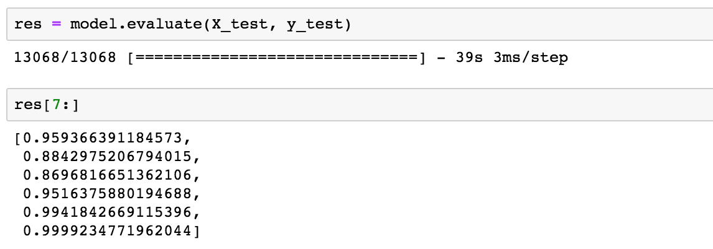

Abstract
本篇博客将简要的总结**”Multi-digit Number Recognition from Street View Imagery using Deep Convolutional Neural Networks”** 这篇论文，并使用该作者的模型利用Keras训练SVHN数据集。
这篇文章的方法主要作为训练SVHN数据集的一个baseline。作者说他的方法能达到百分之96以上的准确率。
任务要求
这里先看一下数据集的样子，其实也就是Number from Street View(街景数字)。

过去的做法
Traditional approaches to solve this problem typically separate out the localization, segmentation, and recognition steps.（过去的做法要经历三步：定位，分割，然后识别）
作者的做法
Propose a unified approach that integrates these three steps via the use of a deep convolutional neural network that operates directly on the image pixels.（作者把这三个步骤通过一个深度的卷积网络就能完成）
作者的贡献
- (a) A unified model to localize, segment, and recognize multi-digit numbers from street level photographs
- (b) A new kind of output layer, providing a conditional probabilistic model of sequences
- (c) Empirical results that show this model performing best with a deep architecture
- (d) Reaching human level performance at specific operating thresholds.
问题描述
图片中的数字：每张图片的数字是一个字符串序列: \(s = s_1 , s_2 , . . . , s_n\)，如上面的第一张图片结果为”379”，\(s_1=3, s_2=7, s_3=9\)。
字符的长度：定义为n，绝大多数的长度小于5。作者这里假设字符的长度最大为5。
实现方法
作者的方法是对于图片的label，训练一个概率模型。这里作者定义：
- S：输出序列，也就是训练数据的label。
- X：输入的图片。
这里的目标也就是通过最大化\( log P (S | X ) \)，来学习模型\( P (S | X ) \)。
X其实就是输入的图片，这里看一下S，S是：图片的数字序列\(S_1,…,S_N \) + 数字序列的长度\(L\)的一个集合。比如上面的”379”是图片的数字序列，序列的长度len(“379”)为3。那么S就是”3”+”379”，也就是”3379”。
这里\( P (S | X ) \)可以定义为：字符长度的概率再乘以每个字符取值的概率。（每个字符取值是独立的）。
$$ P(S=s|X)=P(L=n|X)\prod_{i=1}^nP(S_i =s_i |X) $$
上面的变量都是离散的，\(L\)的取值有七种：0,1,2,….,5,比5大；\(S_i\)有10种：10个数字。
训练这个模型，就是在训练集上最大化\(log P (S | X )\)，作者这里每个参数都使用一个Softmax层。
$$s = (l,s_1,…,s_l) = \arg\max_{L,S_1,…,S_L}logP(S | X).$$
模型结构
下面，看下作者在论文里面发表的模型。

- 输入图片\(X\)是一个128x128x3的图片。
- 然后经过一系列的CNN层进行特征提取，变成了一个含有4096个特征的向量。
- 之后根据这4096个特征，分别让\(L\)、\(S_1\)、\(S_2\)、\(S_3\)、\(S_4\)、\(S_5\)分别经过一个Softmax层\(P(S_i|H)=softmax(W_{S_i}H+b_{S_i})\)。
- 对于每个变量，\(s_i = \arg\max_{S_i}logP(S_i | H). \)
Keras的实现
环境依赖
- python 3.x
- TensorFlow 1.11
- Keras 2.x
- Pillow
- h5py
数据下载
首先去http://ufldl.stanford.edu/housenumbers/下载Format 1的数据。
1 | wget http://ufldl.stanford.edu/housenumbers/test.tar.gz |
然后对数据进行解压，解压后发现会多两个文件夹：test和train。
1 | tar zvxf test.tar.gz |
构建数据集
这个数据集可以使用h5py读取。

其中bbox存了图片数字的框，而name则是图片的文件名。比如说读取出来是下面这样的图片：

然后通过框框把图片裁剪一下。

网络模型
网络模型这里分为卷积层+全连接层部分，代码如下。

卷积层
这里就是三个卷积层。为了让神经网络接受了参数符合同一分布，这里使用了Batch Normalization层，对ConvNet的输入进行批归一化。
全连接层
卷积层最后经过Flatten之后，进入了全连接层。全连接层最后，输出了到6个softmax层中，分别代表：字符的长度、第一个字符、第二个字符、第三个字符、第四个字符、第四个字符。
注意：这里字符的类别是0-10，一共11种，10代表不存在。
训练与测试
接下来调用fit方法训练就好了，这里一共有7个loss和6个accuracy。loss的话是每个softmax输出层都有一个，还有个总的。accuracy就是6个softmax层的accuracy了。

最后我们evaluate一下，可以6个accuracy都达到了85%以上的准确率了。如果想提高的话，可以使用VGG16等结构，网上说可以提升到百分之97，不过训练的话估计就要很慢了。
